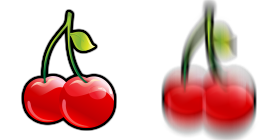

Thank you for purchasing our game. If you have any questions that are beyond the scope of this help file, please feel free to email via user page contact form here. Thanks so much!
Slot Machine - The Fruits is a HTML5 casino game. Enjoy this coloroued slot machine with classic fruit symbols!
The ZIP package contains the game with 1024x768 resolution that automatically scales to fit current screen device and all the assets to grant complete game customization.
The game is fully compatible with all most common mobile devices.
Sounds are DISABLED ON MOBILE DEVICES to avoid compatibility issues but can be easily enabled (read Enable Sound section). Anyway we can't grant full compatibility on all mobile devices if this feature is enabled. WARNING: Sounds can't be enabled for Windows Phone as this kind of device have unsolved issues with
To install the game just upload on your server the game folder game_1024x768.
Game Resize: All game resolution automatically center itself and fits on the screen thanks to the ctl_utils.js file.
If you want to avoid this, comment this function:
$(window).ready(function() {
//sizeHandler();
});
Save Score: if you need to call your php function for saving score, you can add it in the index.html file:
$(document).ready(function(){
var oMain = new CMain();
$(oMain).on("save_score", function(evt,score) {
//ADD YOUR CODE HERE
});
});
Localization: You can easily change game text for different languages, changing string in CLang.js
TEXT_GAMEOVER = "GAME OVER";
TEXT_CONGRATS = "CONGRATULATIONS";
TEXT_MONEY = "MONEY";
TEXT_PLAY = "PLAY";
TEXT_BET = "BET";
TEXT_COIN = "COIN";
TEXT_MAX_BET = "MAX BET";
TEXT_INFO = "INFO";
TEXT_LINES = "LINES";
TEXT_SPIN = "SPIN";
TEXT_WIN = "WIN";
TEXT_HELP_WILD = "THIS SIMBOL IS A JOLLY WHICH \nCAN REPLACE ANY OTHER \nSYMBOL TO MAKE UP A COMBO";
Game option: You can easily customize game setting when creating a new instance of the game in index.html file
var oMain = new CMain({
min_reel_loop:2, //NUMBER OF REEL LOOPS BEFORE SLOT STOPS
reel_delay: 6, //NUMBER OF FRAMES TO DELAY THE REELS THAT START AFTER THE FIRST ONE
time_show_win:2000, //DURATION IN MILLISECONDS OF THE WINNING COMBO SHOWING
time_show_all_wins: 2000, //DURATION IN MILLISECONDS OF ALL WINNING COMBO
money:2000 //STARING CREDIT FOR THE USER
});
This game have the canvas tag in the body. The ready event into the body calls the main function of the game: CMain().
The head section declares all the javascript functions of the game. The whole project uses a typical object-oriented approach.
In the init function there are 3 mapped events that can be useful eventually for stats
The game use two CSS files. The first one is a generic reset file. Many browser interpret the default behavior of html elements differently. By using a general reset CSS file, we can work round this.
Keep in mind, that these values might be overridden somewhere else in the file.
The second file contains all of the specific stylings for the canvas and some hack to be fully compatible with all most popular mobile devices
jQuery is a Javascript library that greatly reduces the amount of code that you must write.
The game have the following js files:
CMain: the main class called by the index file. This file controls the sprite_lib.js file that manages the sprite loading, the loop game and initialize the canvas with the CreateJs library
ctl_utils: this file manages the canvas resize and its centering
sprite_lib: this class loads all images declared in the main class
settings: general game settings
CLang: global string variables for language localization
CPreloader: simple text preloader to show resources loading progress
CMenu: simple menu with play button
CGfxButton: this class create a standard button
CTextButton: this class create a standard text button
CHelp: this class manages the help panel that appears when game starts
CGame: this class manages the game logic
CPayTablePanel: this class manages the paytable panel that is shown clicking the info button
CInterface: this class controls game GUI that contains text and buttons
CEndPanel: this class controls the game over panel that appears when player lose all the lives
CSlotSettings: this class contains all infos relative to symbols, combos and their animations
CreateJs is a suite of modular libraries and tools which work together to enable rich interactive content on open web technologies via HTML5.
Resuming, the complete game flow is the following:
The index.html file calls the CMain.js file after ready event is called
The main class calls CPreloader.js to init preloader text and start sprite loading
When all sprites contained in "/sprites" folder are loaded, the main class removes the preloader and calls the CMenu.js file that shows the main menu
If user click on the play button in main menu, the CGame.js class is called and the game starts
The User can start slot spinning, clicking the spin button on the right
If user click on the exit button in the up-right corner, the game returns to the menu screen
The game contains the symbol spritesheets that you must edit if you want to change symbol images.
You have to edit two png to change any particular symbol in game: symbol_[index].png and symbol_[index]_anim.png.
symbol_1.png: Each symbol is composed by two images: the one on the left is the still symbol, the other one is the moving symbol.

symbol_1_anim.png: This spritesheet contains all animation frames. Replace these 140x140 images into symbols_ani_700x420.psd file to get new animations.
The game avoid sound playing if loaded on any mobile device. If you want to enable sounds also on mobiles, you have to change the following value in settings.js file:
var DISABLE_SOUND_MOBILE = false;
Once again, thank you so much for purchasing this game. Fell free to contact us if you have any questions or issue relating to this game. No guarantees, but we'll do our best to assist.